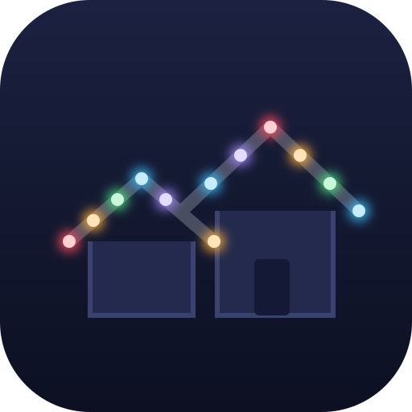

Patterns
Settings
Controller
● Record
+ New pattern
+ New group
Recording
Stop
Open the Gouly app and apply each pattern you want: built-in, your own, or downloaded. Each new one appears below as you go. Duplicates are skipped.
Patterns captured while recording. Name them, then add the ones you want to HomeKit.
Clear list
Changes not applied yet.
When you're done, click
Save
below to apply them to HomeKit.
Cancel
OK